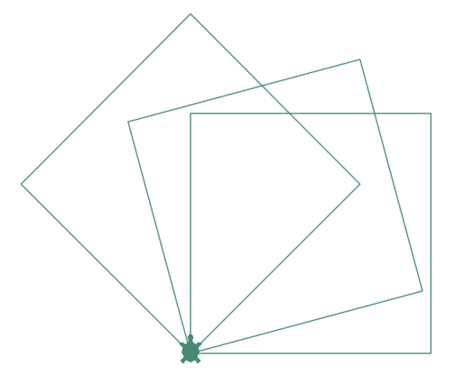
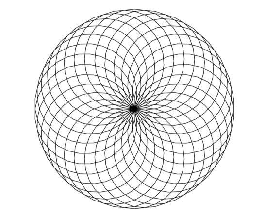
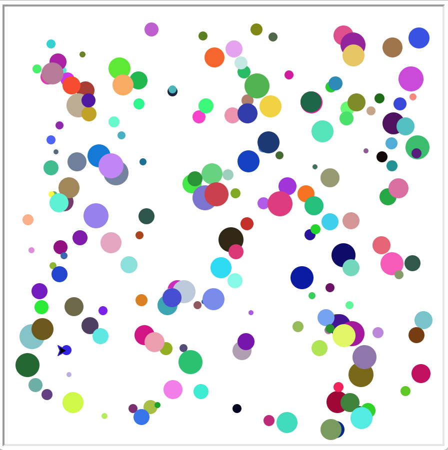
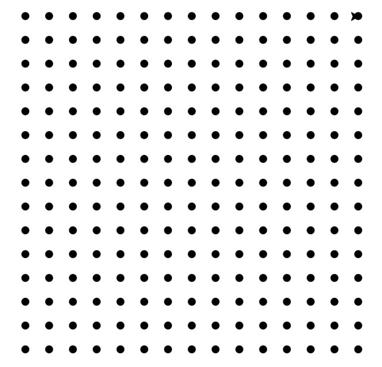
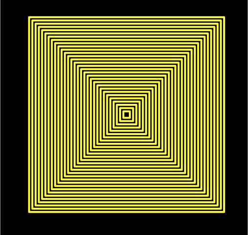
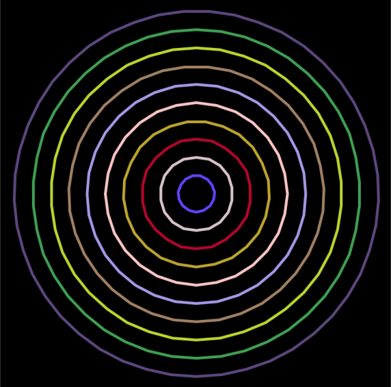

Chap. 07 — Quelques dessins simples avec une tortuePrésentation de la « tortue graphique »Premiers mouvements dans la consoleDéfinition des premières fonctions graphiquesExercice 1Exercice 2Liste des commandes permettant de guider la tortueInstructions pour commander un déplacementModification ou accès à l'état de la tortue graphiqueQuelques commandes supplémentairesExercicesExercice 3Exercice 4Exercice 5Exercice 6Exercice 7Exercice 8Exercice 9Exercice 10
La « tortue graphique » a été inventée à la fin des années 60 par Seymour Papert et ses collègues du MIT (célèbre université américaine) pour permettre de rendre l'apprentissage de la programmation plus ludique. Elle faisait alors partie du langage Logo, spécifiquement développé pour être utilisé par de jeunes enfants.
Le nom « tortue graphique » suggère la façon dont les figures géométriques vont être dessinées à l'écran.
On imagine une tortue capable de se déplacer sur une surface horizontale recouverte de sable et très à l'écoute de la personne qui la nourrit. Lorsque cette tortue se déplace, à la demande de sa (ou son) propriétaire, sa queue laisse une trace sur le sable. Parallèlement, cette tortue peut aussi se déplacer en gardant sa queue en l'air, de façon à ne laisser aucune trace à l'écran.
Les consignes passées à cette tortue permettent donc de tracer des figures géométriques simples mais aussi d'autres relativement complexes.
Lancer le programme Thonny.
Dans l'interpréteur interactif, entrez l'instruction : import turtle
Une flèche doit apparaitre à l'écran.
Entrez l'instruction : tortue_1 = turtle.Turtle()
Quel est l'effet de cette commande ?
Entrez l'instruction : tortue_1.shape("turtle")
Quel est l'effet de cette commande ?
Entrez l'instruction : tortue_1.forward(25)
Entrez la commande : tortue_1.left(30)
Vous devez aussi absolument connaître deux instructions supplémentaires : tortue_1.backward() et tortue_1.right().
Expérimentez ces deux commandes et notez leurs effets. Utilisez différents arguments entiers.
Remarque 1. Si vous souhaitez réinitialiser l'écran, ce qui aura pour effet de repositionner la tortue à sa position de départ, utilisez l'instruction : tortue_1.reset()
Remarque 2. Si vous souhaitez seulement annuler les effets de la dernière instruction, utilisez l'instruction : tortue_1.undo()
Le programme suivant permet de tracer à l'écran un rectangle. Écrire les instructions du corps de la fonction permettant d'effectuer ce tracé.
Vous veillerez à utiliser le moins d'instructions possible. (Le nombre de lignes avec des pointillets correspond généralement au nombre d'instructions à écrire)
ximport turtledef trace_rectangle(tortue: "Turtle", longueur: int, largeur: int) -> None: """ Dessine à l'écran à l'aide de la tortue passée en argument un rectangle de longueur et largeurs passées en argument. Le dessin est effectué à partir de la position de la tortue lorsque la fonction est appelée. """ ....................... ....................... ....................... ....................... .......................def main(): """ Fonction principale qui appelle toutes les autres. """ tortue_1 = turtle.Turtle() longueur = 300 largeur = 200 trace_rectangle(tortue_1, longueur, largeur) turtle.exitonclick() # Empêche la fenêtre de se fermer automatiquement à la fin du tracémain()xxxxxxxxxximport turtledef trace_rectangle(tortue: "Turtle", longueur: int, largeur: int) -> None: """ Dessine à l'écran à l'aide de la tortue passée en argument un rectangle de longueur et largeurs passées en argument. Le dessin est effectué à partir de la position de la tortue lorsque la fonction est appelée. """ for i in range(2): tortue.forward(longueur) tortue.left(90) tortue.forward(largeur) tortue.left(90)def main(): """ Fonction principale qui appelle toutes les autres. """ tortue_1 = turtle.Turtle() longueur = 300 largeur = 200 trace_rectangle(tortue_1, longueur, largeur) turtle.exitonclick() # Empêche la fenêtre de se fermer automatiquement à la fin du tracémain()Modifier le programme suivant de façon à ce qu'il trace à l'écran les trois carrés de la figure ci-dessous :

xxxxxxxxxximport turtledef trace_rectangle(tortue: "Turtle", longueur: int, largeur: int) -> None: """ Dessine à l'écran à l'aide de la tortue passée en argument un rectangle de longueur et largeurs passées en argument. Le dessin est effectué à partir de la position de la tortue lorsque la fonction est appelée. """ ...................... ...................... ...................... ...................... ......................def main(): """ Fonction principale qui appelle toutes les autres. """ tortue_1 = turtle.Turtle() tortue_1.shape("turtle") tortue_1.color("aquamarine4") longueur = 200 largeur = 200 nbre_carres = 3 angle_entre_carres = 15 ...................... ...................... ...................... turtle.exitonclick() # Empêche la fenêtre de se fermer automatiquement à la fin du tracémain()xxxxxxxxxximport turtledef trace_rectangle(tortue: "Turtle", longueur: int, largeur: int) -> None: """ Dessine à l'écran à l'aide de la tortue passée en argument un rectangle de longueur et largeurs passées en argument. Le dessin est effectué à partir de la position de la tortue lorsque la fonction est appelée. """ for i in range(2): tortue.forward(longueur) tortue.left(90) tortue.forward(largeur) tortue.left(90)def main(): """ Fonction principale qui appelle toutes les autres. """ tortue_1 = turtle.Turtle() tortue_1.shape("turtle") tortue_1.color("aquamarine4") longueur = 200 largeur = 200 nbre_carres = 3 angle_entre_carres = 15 for i in range(nbre_carres): trace_rectangle(tortue_1, longueur, largeur) tortue_1.left(angle_entre_carres * (i + 1)) turtle.exitonclick() # Empêche la fenêtre de se fermer automatiquement à la fin du tracémain()Remarque. Consultez l'adresse suivante pour découvrir les couleurs utilisables : http://www.tcl.tk/man/tcl8.5/TkCmd/colors.htm](http://www.tcl.tk/man/tcl8.5/TkCmd/colors.htm).
| Nom de la méthode | Description |
|---|---|
tortue.forward(distance) | Avance la tortue de la distance passée en argument dans la direction selon laquelle la tortue est orientée. Le résultat de cette action dépend donc de l'état de la tortue. |
tortue.backward(distance) | Recule la tortue de la distance passée en argument dans la direction selon laquelle la tortue est orientée. Le résultat de cette action dépend donc de l'état de la tortue. |
tortue.right(angle) | Tourne la tortue d'un angle angle (exprimé en degrés) dans le sens opposé au sens trigonométrique à partir de la direction de la tortue. Le résultat de cette action dépend donc de l'état de la tortue. |
tortue.left(angle) | Tourne la tortue d'un angle angle (exprimé en degrés) dans le sens trigonométrique à partir de la direction de la tortue. Le résultat de cette action dépend donc de l'état de la tortue. |
tortue.setposition(x, y) | Déplace la tortue au point de coordonnées passées en argument. Ne modifie pas l'orientation de la tortue. Le résultat de cette action ne dépend donc pas de l'état de la tortue. |
tortue.setx(x) | Donne à l'abscisse de la position de la tortue la valeur x. Ne modifie pas la valeur de l'ordonnée . Le résultat de cette action ne dépend donc pas de l'état de la tortue. |
tortue.sety(y) | Donne à l'ordonnée de la position de la tortue la valeur y. Ne modifie pas la valeur de l'abscisse . Le résultat de cette action ne dépend donc pas de l'état de la tortue. |
tortue.setheading(angle) | Donne à l'angle (exprimé en degrés) entre la droite sur laquelle la tortue s'appuie et l'axe horizontal la valeur angle. Les valeurs remarquables sont : 0° ou Est, 90° ou Nord, 180° ou Ouest, 270° ou Sud. Le résultat de cette action ne dépend donc pas de l'état de la tortue. |
tortue.home() | Transporte la tortue au centre de l'écran, origine des coordonnées. |
tortue.dot(size, color) | Dessine un point de diamètre size, de couleur color. Les arguments sont optionnels. |
tortue.circle(radius) | Dessine un cercle de rayon radius pixels à partir de la position de la tortue. Le centre du cercle est radius pixels à gauche de la position de la tortue, perpendiculairement à sa direction. |
tortue.undo() | Annule la dernière action réalisée par la tortue. |
| Nom de la méthode | Description |
|---|---|
tortue.position() | Retourne les coordonnées (En fait il s'agit d'un vecteur de type Vec2D) de la position de la tortue. |
tortue.speed(speed) | Retourne ou modifie la valeur de la vitesse de déplacement de la tortue. Si aucun argument n'est fourni, la valeur de la vitesse est retourneé. Pour modifier la valeur de la vitesse, l'argument doit être un entier compris entre 0 (le plus rapide) et 1 (le plus lent). |
tortue.towards(x, y) | Retourne l'angle que fait la direction selon laquelle est orientée la tortue et la droite qui relie la tortue au point de coordonnées passé en argument. Cette valeur dépend donc de la direction de la tortue. |
tortue.xcor() | Retourne la coordonnée de la position de la tortue. |
tortue.ycor() | Retourne la coordonnée de la position de la tortue. |
tortue.heading() | Retourne l'angle que fait la direction selon laquelle est orientée la tortue et l'axe horizontal, origine des angles. |
tortue.distance(x, y) | Retourne la distance entre la position de la tortue et le vecteur passé en argument. Comme la position d'une tortue est un vecteur de type Vec2D, l'argument peut être une tortue. La méthode retourne alors la distance entre les deux tortues. |
tortue.pendown() | La queue de la tortue traine au sol ; une marque apparait à l'écran lors de ses déplacements. |
tortue.penup() | La queue de la tortue est relevée ; aucune marque n'apparait à l'écran lors de ses déplacements. |
tortue.pensize(width) | Positionne la largeur du trait à la valeur width, un entier (10 est déjà un trait épais). |
tortue.isdown() | Retourne True si la queue est baissée, False sinon. |
tortue.hideturtle() | N'affiche pas la tortue (ou la marque qui représente la tortue) à l'écran. |
tortue.show() | Affiche la tortue (ou la marque qui représente la tortue) à l'écran. |
tortue.isvisible() | Retourne True si la tortue (ou la marque qui la représente) est visible à l'écran, False sinon. |
tortue.shape(name) | Permet de choisir la forme de la marque qui représente la tortue. Les formes pré-exsistantes sont : "arrow", "turtle", "circle", "square", "triangle", "classic". |
| Nom de la méthode | Description |
|---|---|
tortue.reset() | Réinitialise le dessin : la tortue est repositionnée au centre de l'écran, ses attributs sont effacés et toute marque à l'écran supprimée. |
tortue.clear() | Supprime le dessin mais ne modifie ni la position de la tortue, ni son état. |
tortue.write(text) | Écrit le texte text à l'écran. |
Écrire un programme commandant à la tortue de tracer à l'écran la figure ci-dessous composée de 30 cercles de rayons 100 pixels ayant tous en commun le point .

xxxxxxxxxximport turtledef main(): nbre_cercles = 30 angle_entre_cercles = int(360 / nbre_cercles) rayon_cercles = 100 tortue = turtle.Turtle() tortue.speed(0) for i in range(0, nbre_cercles): turtle.circle(rayon_cercles) turtle.setheading(angle_entre_cercles * (i + 1)) turtle.exitonclick()main()Le programme ci-dessous, une fois complété, doit tracer 200 points à l'écran dont la position et la taille varient de façon aléatoire entre les valeurs indiquées dans la première partie du code. Compléter les instructions qui manquent.

xxxxxxxxxximport turtleimport randomdef main(): """ Fonction principale du programme. """ nbre_points = 200 rayon_min = 5 rayon_max = 25 x_min = -200 x_max = 200 y_min = -200 y_max = 200 window = turtle.Screen() window.setup(2 * x_max + 50, 2 * y_max + 50) window.bgcolor("white") window.colormode(255) # gestion de la couleur de la tortue tortue = turtle.Turtle() tortue.speed(0) for i in range(nbre_points): x = ............................ y = ............................ rayon = ............................ rouge = random.randint(0, 255) vert = random.randint(0, 255) bleu = random.randint(0, 255) ............................ ............................ ............................ tortue.pencolor(rouge, vert, bleu) ............................ window.exitonclick()main()xxxxxxxxxximport turtleimport randomdef main(): """ Fonction principale du programme. """ nbre_points = 200 rayon_min = 5 rayon_max = 25 x_min = -200 x_max = 200 y_min = -200 y_max = 200 window = turtle.Screen() window.setup(2 * x_max + 50, 2 * y_max + 50) window.bgcolor("white") window.colormode(255) # gestion de la couleur de la tortue tortue = turtle.Turtle() tortue.speed(0) for i in range(nbre_points): x = random.randint(x_min, x_max) y = random.randint(y_min, y_max) rayon = random.randint(rayon_min, rayon_max) rouge = random.randint(0, 255) vert = random.randint(0, 255) bleu = random.randint(0, 255) tortue.penup() tortue.setposition(x, y) tortue.pendown() tortue.pencolor(rouge, vert, bleu) tortue.dot(rayon) window.exitonclick()main()Sur le modèle de l'exercice précédent, écrire un programme qui trave à l'écran 200 carrés dont la position du coin inférieur gauche est aléatoire, tout comme l'orientation et la largeur.
xxxxxxxxxximport turtleimport randomdef trace_carre(tortue: "Turtle", largeur: int) -> None: """ Trace un carré de largeur donnée dont l'orientation dépend de l'orientation de la tortue. À l'issue du tracé, la tortue retrouve sa direction intiale. """ for i in range(4): tortue.forward(largeur) tortue.left(90) def main(): """ Fonction principale. """ tortue = turtle.Turtle() tortue.speed(0) nbre_carres = 200 largeur_min = 5 largeur_max = 25 angle_min = 0 angle_max = 360 x_min = -200 x_max = 200 y_min = -200 y_max = 200 for i in range(nbre_carres): x = random.randint(x_min, x_max) y = random.randint(y_min, y_max) largeur = random.randint(largeur_min, largeur_max) angle = random.randint(angle_min, angle_max) tortue.penup() tortue.setposition(x, y) tortue.setheading(angle) tortue.pendown() trace_carre(tortue, largeur) turtle.exitonclick()main()Compléter le code ci-dessous de façon à ce qu'il trace à l'écran une figure identique à celle présentée ci-dessous.

xxxxxxxxxximport turtledef main(): nbre_colonnes = 15 nbre_rangees = 15 rayon = 10 dx = 30 # espacement horizontal entre points dy = 30 # espacement vertical entre points tortue = turtle.Turtle() tortue.speed(0) ......................................... ......................................... ......................................... ......................................... ......................................... ......................................... ......................................... turtle.exitonclick() main()xxxxxxxxxximport turtledef main(): nbre_colonnes = 15 nbre_rangees = 15 rayon = 10 dx = 30 # espacement horizontal entre points dy = 30 # espacement vertical entre points tortue = turtle.Turtle() tortue.speed(0) for i in range(nbre_rangees): for j in range(nbre_colonnes): tortue.penup() tortue.setposition(i * dx - (nbre_rangees * dx) // 2, j * dy - (nbre_colonnes * dy) // 2) tortue.pendown() tortue.dot(rayon) turtle.exitonclick() main()Compléter le code ci-dessous de façon à ce qu'il trace à l'écran une figure identique à celle présentée ci-dessous.

xxxxxxxxxx"""Tracés de carrés concentriques."""import turtle def trace_carres(tortue: "Turtle", largeur: int, largeur_min: int, dl: int) -> None: """ Dessine à l'écran une série de carrés dont les largeurs sont de plus en plus petites. Le processus itératif cesse dès que la largeur à tracer est inférieure à la largeur minimale choisie. Tous les carrés sont espacés de la longueur dl. """ ...................................... ...................................... ...................................... ...................................... ...................................... ...................................... ...................................... def trace_carre(tortue: "Turtle", largeur: int) -> None: """ Dessine un carré de côté de largeur donnée. """ ...................................... ...................................... ...................................... def main(): """ Fonction principale, appelle toutes les autres fonctions. """ width = 700 height = 600 largeur = 300 largeur_min = 10 delta = 15 fenetre = turtle.Screen() fenetre.setup(width, height) fenetre.bgcolor("black") tortue = turtle.Turtle() tortue.hideturtle() tortue.color("yellow") tortue.speed(0) tortue.pensize("3") ...................................... window.exitonclick()main()xxxxxxxxxx"""Tracés de carrés concentriques."""import turtle def trace_carres(tortue: "Turtle", largeur: int, largeur_min: int, dl: int) -> None: """ Dessine à l'écran une série de carrés dont les largeurs sont de plus en plus petites. Le processus itératif cesse dès que la largeur à tracer est inférieure à la largeurw• minimale choisie. Tous les carrés sont espacés de la longueur dl. """ while not(largeur < largeur_min): tortue.penup() tortue.home() tortue.goto(-largeur // 2, -largeur // 2) # Coin inférieur gauche tortue.pendown() trace_carre(tortue, largeur) largeur -= dl def trace_carre(tortue: "Turtle", largeur: int) -> None: """ Dessine un carré de côté de largeur donnée. """ for i in range(4): tortue.forward(largeur) tortue.left(90) def main(): """ Fonction principale, appelle toutes les autres fonctions. """ width = 700 height = 600 largeur = 300 largeur_min = 10 delta = 15 fenetre = turtle.Screen() fenetre.setup(width, height) fenetre.bgcolor("black") tortue = turtle.Turtle() tortue.hideturtle() tortue.color("yellow") tortue.speed(0) tortue.pensize("3") trace_carres(tortue, largeur, largeur_min, delta) window.exitonclick()main()Sur le modèle de l'exercice précédent, compléter le code ci-dessous de façon à ce qu'il trace à l'écran des cercles concentriques, comme illustré sur la figure ci-dessous.

xxxxxxxxxx"""Tracés de cercles de différentes tailles."""import turtledef draw_circles(tortue: "Turtle", r: int, r_min: int, dr: int) -> None: """ Dessine à l'écran une série de cercles dont les rayons sont de plus en plus petits. Le processus itératif cesse dès que le rayon du cercle à tracer est inférieur au rayon minimal choisi. """ ....................... rouge = random.randint(0, 255) vert = random.randint(0, 255) bleu = random.randint(0, 155) ....................... ....................... ....................... tortue.pencolor(rouge, vert, bleu) ....................... .......................def main(): """ Fonction principale, appelle toutes les autres fonctions. """ width = 700 height = 600 radius = 200 radius_min = 15 delta_r = 15 window = turtle.Screen() window.setup(width, height) window.bgcolor("black") window.colormode(255) # gestion de la couleur de la tortue pen = turtle.Turtle() pen.hideturtle() pen.color("red") pen.speed(0) pen.pensize("3") ....................... window.exitonclick()main()xxxxxxxxxx"""Tracés de cercles de différentes tailles."""import turtleimport randomdef draw_circles(tortue: "Turtle", r: int, r_min: int, dr: int) -> None: """ Dessine à l'écran une série de cercles dont les rayons sont de plus en plus petits. Le processus itératif cesse dès que le rayon du cercle à tracer est inférieur au rayon minimal choisi. """ while not(r < r_min): rouge = random.randint(0, 255) vert = random.randint(0, 255) bleu = random.randint(0, 155) tortue.penup() tortue.goto(0, -r) tortue.pendown() tortue.pencolor(rouge, vert, bleu) tortue.circle(r) r -= drdef main(): """ Fonction principale, appelle toutes les autres fonctions. """ width = 700 height = 600 radius = 200 radius_min = 15 delta_r = 15 window = turtle.Screen() window.setup(width, height) window.bgcolor("black") window.colormode(255) # gestion de la couleur de la tortue pen = turtle.Turtle() pen.hideturtle() pen.color("red") pen.speed(0) pen.pensize("3") draw_circles(pen, radius, radius_min, delta_r) window.exitonclick()main()Dans cet exercice on souhaite créer une première animation, c'est à dire une succession d'images à l'écran. L'objectif est de faire traverser un rectangle à l'écran.
xxxxxxxxxximport turtledef rectangle(tortue: "Turtle", longueur: int, largeur: int) -> None: """ Trace un rectangle de longueur et largeur passées en argument grâce à la tortue (elle-même passée en argument). Les position et direction de la tortue ne sont pas modifiées. À l'issue du tracé la tortue se retrouve au point de départ, avec la même direction. """ for i in range(2): ................................. ................................. ................................. .................................def trace_rectangle(tortue: "Turtle", x: int, y: int, longueur: int, largeur: int) -> None: """ Déplace la souris à la position (x, y) puis trace un rectangle de longueur et largeur passées en argument. (x, y) est le coin inférieur gauche du rectangle. """ tortue.penup() tortue.goto(x, y) tortue.pendown() .................................def main(): """ Fonction principale. Initialisation des variables et appel des autres fonctions. """ # Paramètres de l'animation largeur_aire_jeu = 800 longueur_aire_jeu = 800 largeur_carre = 100 x_rect = -(longueur_aire_jeu - largeur_carre) y_rect = -largeur_carre //2 pas = 50 # de combien augment l'abscisse entre deux animations # Création de la fenetre pour l'animation fenetre = turtle.Screen() fenetre.setup(longueur_aire_jeu + 50, largeur_aire_jeu + 50) fenetre.bgcolor("black") # Création de la tortue pour tracer les limites de l'animation tortue1 = turtle.Turtle() tortue1.speed(0) tortue1.color("white") tortue1.hideturtle() # Tracé des limites ...............(tortue1, -longueur_aire_jeu // 2, -largeur_aire_jeu // 2, longueur_aire_jeu, largeur_aire_jeu) # Création de la tortue pour l'animation tortue2 = turtle.Turtle() tortue2.speed(0) tortue2.color("white") tortue2.hideturtle() # Animation while ................................. tortue2.clear() ................................. ................................. # Ferme la fenêtre avec un click sur l'espace de jeu turtle.exitonclick()main()L'animation est-elle fluide ? Le carré s'affiche-t-il en un seul bloc ?
xxxxxxxxxximport turtledef rectangle(tortue: "Turtle", longueur: int, largeur: int) -> None: """ Trace un rectangle de longueur et largeur passées en argument grâce à la tortue (elle-même passée en argument). Les position et direction de la tortue ne sont pas modifiées. À l'issue du tracé la tortue se retrouve au point de départ, avec la même direction. """ for i in range(2): tortue.forward(longueur) tortue.left(90) tortue.forward(largeur) tortue.left(90) def trace_rectangle(tortue: "Turtle", x: int, y: int, longueur: int, largeur: int) -> None: """ Déplace la souris à la position (x, y) puis trace un rectangle de longueur et largeur passées en argument. (x, y) est le coin inférieur gauche du rectangle. """ tortue.penup() tortue.goto(x, y) tortue.pendown() rectangle(tortue, longueur, largeur) def main(): """ Fonction principale. Initialisation des variables et appel des autres fonctions. """ # Paramètres de l'animation largeur_aire_jeu = 800 longueur_aire_jeu = 800 largeur_carre = 100 x_rect = -(longueur_aire_jeu - largeur_carre) y_rect = -largeur_carre //2 pas = 50 # de combien augment l'abscisse entre deux animations # Création de la fenetre pour l'animation fenetre = turtle.Screen() fenetre.setup(longueur_aire_jeu + 50, largeur_aire_jeu + 50) fenetre.bgcolor("black") # Création de la tortue pour tracer les limites de l'animation tortue1 = turtle.Turtle() tortue1.speed(0) tortue1.color("white") tortue1.hideturtle() # Tracé des limites trace_rectangle(tortue1, -longueur_aire_jeu // 2, -largeur_aire_jeu // 2, longueur_aire_jeu, largeur_aire_jeu) # Création de la tortue pour l'animation tortue2 = turtle.Turtle() tortue2.speed(0) tortue2.color("white") tortue2.hideturtle() # Animation while x_rect <= longueur_aire_jeu // 2: tortue2.clear() trace_rectangle(tortue2, x_rect, y_rect, largeur_carre, largeur_carre) x_rect += pas # Ferme la fenêtre avec un click sur l'espace de jeu turtle.exitonclick()main()L'abscence de fluidité de l'animation précédente est due au fait que l'on a laissé à Python la liberté de rafraîchir l'écran à sa convenance. La plupart du temps, il l'a fait alors que le carré n'était même pas complètement tracé.
Deux commandes permettent de contrôler le rafraichissement :
fenetre.tracer(0) supprime le contrôle à Python ;fenetre.update() impose à Python de refraîchir l'écran.Généralement, on supprime le contrôle à Python avant l'animation et on lui impose un rafraichissement juste après chaque dessin.
Modifier le programme précédente de façon à y incorporer les deux commandes.
xxxxxxxxxximport turtledef rectangle(tortue: "Turtle", longueur: int, largeur: int) -> None: """ Trace un rectangle de longueur et largeur passées en argument grâce à la tortue (elle-même passée en argument). Les position et direction de la tortue ne sont pas modifiées. À l'issue du tracé la tortue se retrouve au point de départ, avec la même direction. """ for i in range(2): tortue.forward(longueur) tortue.left(90) tortue.forward(largeur) tortue.left(90) def trace_rectangle(tortue: "Turtle", x: int, y: int, longueur: int, largeur: int) -> None: """ Déplace la souris à la position (x, y) puis trace un rectangle de longueur et largeur passées en argument. (x, y) est le coin inférieur gauche du rectangle. """ tortue.penup() tortue.goto(x, y) tortue.pendown() rectangle(tortue, longueur, largeur) def main(): """ Fonction principale. Initialisation des variables et appel des autres fonctions. """ # Paramètres de l'animation largeur_aire_jeu = 800 longueur_aire_jeu = 800 largeur_carre = 100 x_rect = -(longueur_aire_jeu - largeur_carre) y_rect = -largeur_carre //2 pas = 50 # de combien augment l'abscisse entre deux animations # Création de la fenetre pour l'animation fenetre = turtle.Screen() fenetre.setup(longueur_aire_jeu + 50, largeur_aire_jeu + 50) fenetre.bgcolor("black") # Création de la tortue pour tracer les limites de l'animation tortue1 = turtle.Turtle() tortue1.speed(0) tortue1.color("white") tortue1.hideturtle() # Tracé des limites trace_rectangle(tortue1, -longueur_aire_jeu // 2, -largeur_aire_jeu // 2, longueur_aire_jeu, largeur_aire_jeu) # Création de la tortue pour l'animation tortue2 = turtle.Turtle() tortue2.speed(0) tortue2.color("white") tortue2.hideturtle() # On prend en main le rafraichissement fenetre.tracer(0) # Animation while x_rect <= longueur_aire_jeu // 2: tortue2.clear() trace_rectangle(tortue2, x_rect, y_rect, largeur_carre, largeur_carre) fenetre.update() # affichage() x_rect += pas # Ferme la fenêtre avec un click sur l'espace de jeu turtle.exitonclick() main()L'animation est-elle maintenant fluide ? Quel problème persiste ?
xxxxxxxxxximport turtledef rectangle(tortue: "Turtle", longueur: int, largeur: int) -> None: """ Trace un rectangle de longueur et largeur passées en argument grâce à la tortue (elle-même passée en argument). Les position et direction de la tortue ne sont pas modifiées. À l'issue du tracé la tortue se retrouve au point de départ, avec la même direction. """ for i in range(2): tortue.forward(longueur) tortue.left(90) tortue.forward(largeur) tortue.left(90) def trace_rectangle(tortue: "Turtle", x: int, y: int, longueur: int, largeur: int) -> None: """ Déplace la souris à la position (x, y) puis trace un rectangle de longueur et largeur passées en argument. (x, y) est le coin inférieur gauche du rectangle. """ tortue.penup() tortue.goto(x, y) tortue.pendown() rectangle(tortue, longueur, largeur) def main(): """ Fonction principale. Initialisation des variables et appel des autres fonctions. """ # Paramètres de l'animation largeur_aire_jeu = 800 longueur_aire_jeu = 800 largeur_carre = 100 x_rect = -(longueur_aire_jeu - largeur_carre) y_rect = -largeur_carre //2 pas = 1 # de combien augment l'abscisse entre deux animations # Création de la fenetre pour l'animation fenetre = turtle.Screen() fenetre.setup(longueur_aire_jeu + 50, largeur_aire_jeu + 50) fenetre.bgcolor("black") # Création de la tortue pour tracer les limites de l'animation tortue1 = turtle.Turtle() tortue1.speed(0) tortue1.color("white") tortue1.hideturtle() # Tracé des limites trace_rectangle(tortue1, -longueur_aire_jeu // 2, -largeur_aire_jeu // 2, longueur_aire_jeu, largeur_aire_jeu) # Création de la tortue pour l'animation tortue2 = turtle.Turtle() tortue2.speed(0) tortue2.color("white") tortue2.hideturtle() # On prend en main le rafraichissement fenetre.tracer(0) # Animation while x_rect <= longueur_aire_jeu // 2: tortue2.clear() trace_rectangle(tortue2, x_rect, y_rect, largeur_carre, largeur_carre) fenetre.update() # affichage() x_rect += pas # Ferme la fenêtre avec un click sur l'espace de jeu turtle.exitonclick() main()Dans cet exercice on va programmer le mouvement d'une balle dans une boite à deux dimensions.
xxxxxxxxxx"""Mouvement d'une balle contenue dans une boite à deux dimensions."""import turtlefrom time import sleepdef trace_rectangle(tortue: "Turtle", x: int, y: int, longueur: int, largeur: int) -> None: """ Déplace la souris à la position (x, y) puis trace un rectangle de longueur et largeur passées en argument. (x, y) est le coin inférieur gauche du rectangle. """ tortue.penup() tortue.goto(x, y) tortue.pendown() ....................... range(2): ....................... ....................... .......................def lancement_jeu(fenetre: "Screen", tortue: "Turtle", t: int, t_max: int, largeur: int, hauteur: int, x: int, y: int, vx:int, vy: int, rayon: int) -> None: """ Déplace à l'écran une balle en la conservant dans les limites du plateau. """ while .......................: if .......................: ....................... elif .......................: ....................... elif .......................): ....................... elif .......................: ....................... x = ....................... y = ....................... tortue.clear() tortue.penup() tortue.goto(x, y) tortue.pendown() tortue.color("yellow") tortue.dot(rayon) sleep(0.1) t = .......................def main(): """ Fonction principale. """ # Paramètres de l'animation largeur = 400 hauteur = 400 rayon = 30 x, y = 0, 0 vx, vy = 20, 15 date_debut, date_fin = 1, 500 # Création de la fenêtre fenetre = turtle.Screen() fenetre.setup(largeur + 50, hauteur + 50) fenetre.bgcolor("black") # Création de la tortue qui trace les limites de l'aire de jeu tortue1 = turtle.Turtle() tortue1.speed(0) tortue1.color("white") tortue1.hideturtle() # Tracé des limites .......................(tortue1, -largeur // 2, -hauteur // 2, largeur, hauteur) # Création de la tortue du jeu tortue = turtle.Turtle() tortue.speed(0) tortue.color("yellow") tortue.hideturtle() tortue.dot(rayon) # Lancement du jeu .......................(fenetre, tortue, date_debut, date_fin, largeur, hauteur, x, y, vx, vy, rayon) main()xxxxxxxxxx"""Mouvement d'une balle contenue dans une boite à deux dimensions."""import turtlefrom time import sleepdef trace_rectangle(tortue: "Turtle", x: int, y: int, longueur: int, largeur: int) -> None: """ Déplace la souris à la position (x, y) puis trace un rectangle de longueur et largeur passées en argument. (x, y) est le coin inférieur gauche du rectangle. """ tortue.penup() tortue.goto(x, y) tortue.pendown() for i in range(2): tortue.forward(longueur) tortue.left(90) tortue.forward(largeur) tortue.left(90)def lancement_jeu(fenetre: "Screen", tortue: "Turtle", t: int, t_max: int, largeur: int, hauteur: int, x: int, y: int, vx:int, vy: int, rayon: int) -> None: """ Déplace à l'écran une balle en la conservant dans les limites du plateau. """ while t <= t_max: if y > (hauteur / 2 - rayon): vy = -vy elif y < (-hauteur / 2 + rayon): vy = -vy elif x > (largeur / 2 - rayon): vx = -vx elif x < (-largeur / 2 + rayon): vx = -vx x = x + vx y = y + vy tortue.clear() tortue.penup() tortue.goto(x, y) tortue.pendown() tortue.color("yellow") tortue.dot(rayon) sleep(0.1) t = t + 1def main(): """ Fonction principale. """ # Paramètres de l'animation largeur = 400 hauteur = 400 rayon = 30 x, y = 0, 0 vx, vy = 20, 15 date_debut, date_fin = 1, 500 # Création de la fenêtre fenetre = turtle.Screen() fenetre.setup(largeur + 50, hauteur + 50) fenetre.bgcolor("black") # Création de la tortue qui trace les limites de l'aire de jeu tortue1 = turtle.Turtle() tortue1.speed(0) tortue1.color("white") tortue1.hideturtle() # Tracé des limites trace_rectangle(tortue1, -largeur // 2, -hauteur // 2, largeur, hauteur) # Création de la tortue du jeu tortue = turtle.Turtle() tortue.speed(0) tortue.color("yellow") tortue.hideturtle() tortue.dot(rayon) # Lancement du jeu lancement_jeu(fenetre, tortue, date_debut, date_fin, largeur, hauteur, x, y, vx, vy, rayon) main()sleep(0.1) ? Modifier la valeur de l'argument pour comprendre l'intérêt de cette fonction.xxxxxxxxxx"""Mouvement d'une balle contenue dans une boite à deux dimensions."""import turtlefrom time import sleepdef trace_rectangle(tortue: "Turtle", x: int, y: int, longueur: int, largeur: int) -> None: """ Déplace la souris à la position (x, y) puis trace un rectangle de longueur et largeur passées en argument. (x, y) est le coin inférieur gauche du rectangle. """ tortue.penup() tortue.goto(x, y) tortue.pendown() for i in range(2): tortue.forward(longueur) tortue.left(90) tortue.forward(largeur) tortue.left(90)def lancement_jeu(fenetre: "Screen", tortue: "Turtle", t: int, t_max: int, largeur: int, hauteur: int, x: int, y: int, vx:int, vy: int, rayon: int) -> None: """ Déplace à l'écran une balle en la conservant dans les limites du plateau. """ while t <= t_max: if y > (hauteur / 2 - rayon): vy = -vy elif y < (-hauteur / 2 + rayon): vy = -vy elif x > (largeur / 2 - rayon): vx = -vx elif x < (-largeur / 2 + rayon): vx = -vx x = x + vx y = y + vy tortue.clear() tortue.penup() tortue.goto(x, y) tortue.pendown() tortue.color("yellow") tortue.dot(rayon) fenetre.update() sleep(0.1) t = t + 0.1def main(): """ Fonction principale. """ # Paramètres de l'animation largeur = 400 hauteur = 400 rayon = 30 x, y = 0, 0 vx, vy = 20, 15 date_debut, date_fin = 1, 500 # Création de la fenêtre fenetre = turtle.Screen() fenetre.setup(largeur + 50, hauteur + 50) fenetre.bgcolor("black") fenetre.tracer(0) # Création de la tortue qui trace les limites de l'aire de jeu tortue1 = turtle.Turtle() tortue1.speed(0) tortue1.color("white") tortue1.hideturtle() # Tracé des limites trace_rectangle(tortue1, -largeur // 2, -hauteur // 2, largeur, hauteur) # Création de la tortue du jeu tortue = turtle.Turtle() tortue.speed(0) tortue.color("yellow") tortue.hideturtle() tortue.dot(rayon) # Lancement du jeu lancement_jeu(fenetre, tortue, date_debut, date_fin, largeur, hauteur, x, y, vx, vy, rayon) main()